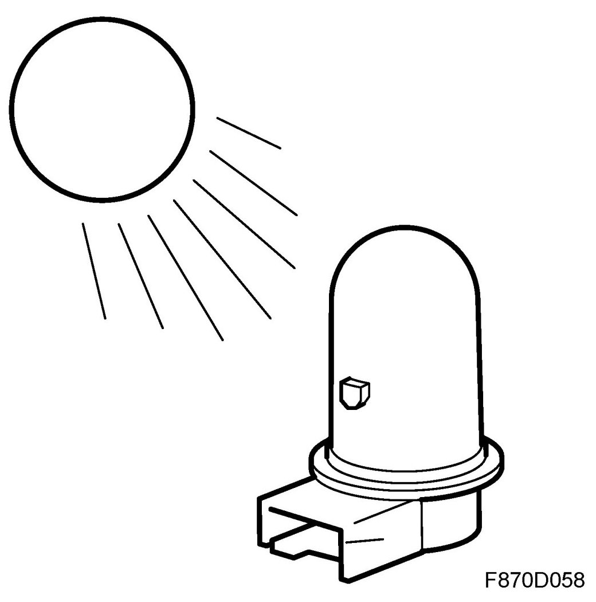
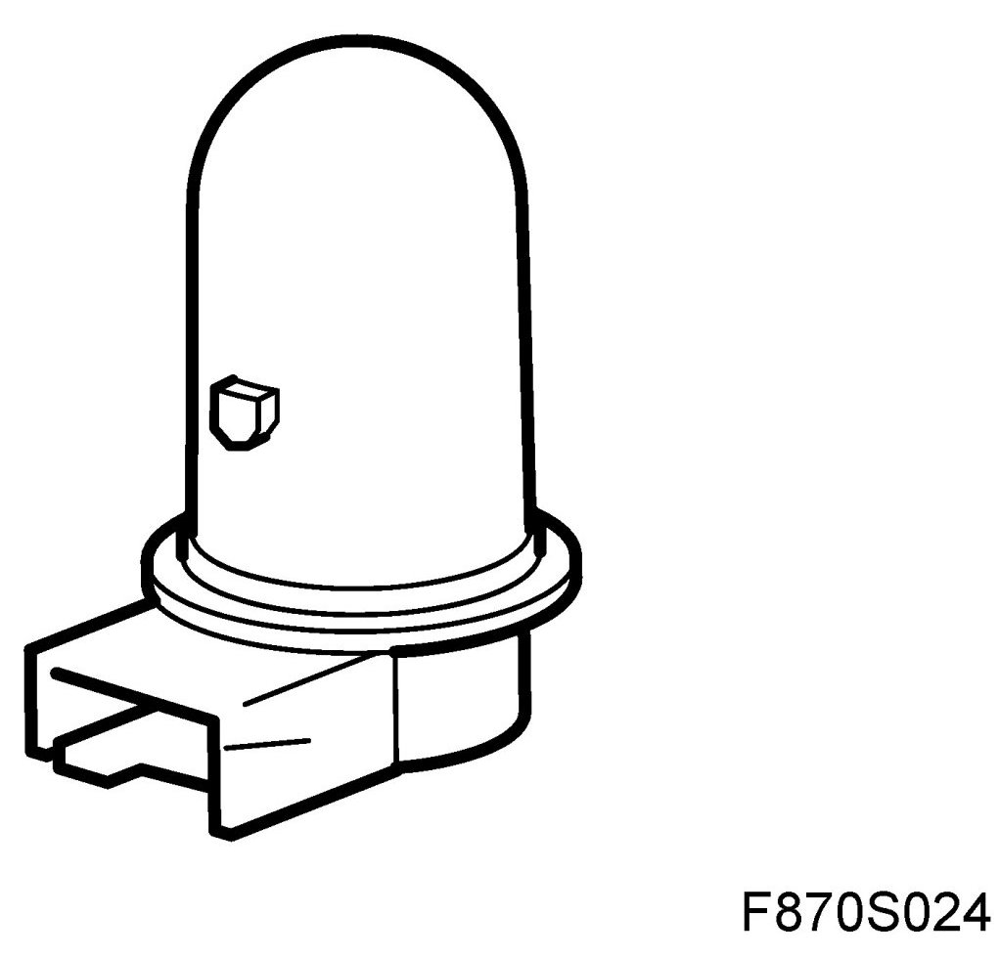
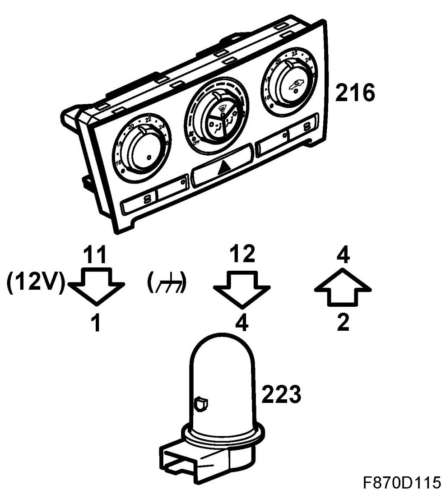
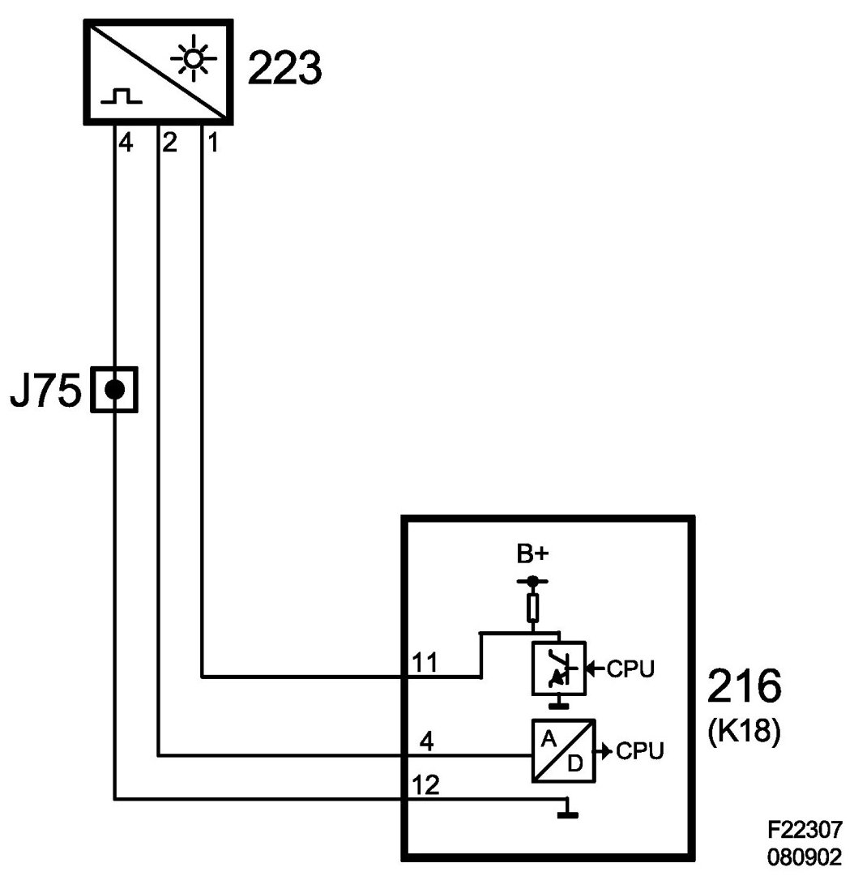

Solar Sensor (223)
Solar Sensor (223)
Location
Solar sensor (223).
Main task
The solar sensor provides information regarding the intensity of the sun and its position.

Type
The solar sensor contains 5 solar cells: left, right, front, rear and top. The treated plastic housing allows infrared light (heat radiation) through only. The ACC control module sends a B+ pulse feed to the sensor and grounds the sensor. Voltage from the 5 sensor elements are sent in succession to the ACC unit which then calculates the sun's intensity and position.

Connect
Solar sensor pin 1 receives a B+ pulse feed from ACC control module pin 11 (K18) and is connected to ground with pin 4 from ACC control module pin 12 (K18). Voltage from the 5 sensor elements are sent in succession from pin 2 to ACC control module pin 4 (K18).

